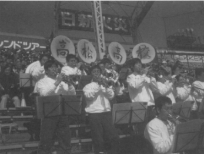

深夜の東名高速浜松付近で我々の甲子園行き一番バスは止まったきりだ。大きな事故だったらしく焦ってもどうしようもなかった。
やっと甲子園に着いた時には高松部隊は先に入った後だった。
楽器を手にもみくちゃになってアルプススタンドに辿り着いた時には、既にプレーは始まっていて球場は異様な興奮に包まれていた。。。。
試合は・・惜しかった。
応援で最優秀賞を頂いたのは、応援団もチアガールもみんな自分達のおかげだと思ってるので良い。
毎日新聞評には「ブラスバンドがベートーベンの歓喜の歌を演奏するなど‥･」とあり、100人近くも掻き集めて甲子園に集結したブラスバンドも頑張った。
スタンド前方には少年野球チームの小学生達が、夢中で声を張り上げていた。
「僕等も勉強して！高高に入って！甲子園に来るんだ！」と、甲子園に出場するという意義がそんなところにあるようだ。。。
しかし後４、５年は掛かることになる。
さて今年も東京王翠会で校歌応援歌を演奏することになったが、昨年の盛り上がり分その後遺症か!?ちょっと集まりが悪いようだ。
しかし少しも心配することはない。
それは私の年に立ち上げた高高吹奏楽部の卒業生が例年首都圏に５、６人は来ているので、（私の年齢－18）×5＝？。。。なんと！２００人余りになるからだ。
これまでにも、懐かしい高校時代の応援歌や校歌を旧友の前で演奏することに喜びを感じ、会場を盛り上げることに一役買ったと、自負しているものも多く、例年何処から!?ともなく集まって来る。。。
とは言え､今年も演奏しにきた者には「また来い！」と声を掛け、「またやろう！」という気持ちになるよう、皆さんにも呼びかけて頂ければ幸いです。
高高ブラスバンド関東ＯＢ会々長
頼則絢太（昭和34年卒）
高松高校吹奏楽部ＯＢ会HP
http://www.geocities.co.jp/CollegeLife/4562